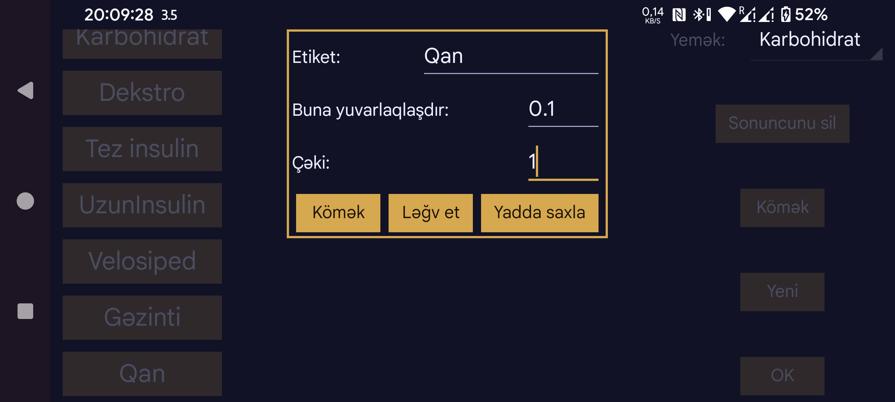

Miqdar daxil etmək üçün istifadə olunan etiketin adı. Ortanın solundakı menyu → Yeni miqdar vasitəsilə müəyyən tarix və saata aid ədəd daxil etmək olar. Belə qeydlər qlükoza qrafikində həmin vaxta uyğun yerdə və ya siyahıda göstərilə bilər.
Kerfstok saat tətbiqində istifadə olunur. Bu etiketlə daxil edilmiş miqdarlar göstərilən addıma uyğun yuvarlaqlaşdırılır.
0 — tam dəqiqlik; 0,5 — 0,5-in qatlarına yuvarlaqlaşdırma və s.
0 olduqda miqdarlar qiymətindən asılı olmayaraq qrafikdə eyni hündürlükdə göstərilir. Çəki 0-dan böyükdürsə, bu etiketlə daxil edilmiş hər miqdar həmin çəkiyə vurulur və qlükoza qrafiki ilə eyni koordinatlarda kvadrat şəklində göstərilir. Məsələn, barmaqdan ölçülmüş qlükozanı sensor göstəriciləri ilə eyni ölçüdə göstərmək üçün çəkini 1 təyin edə bilərsiniz.